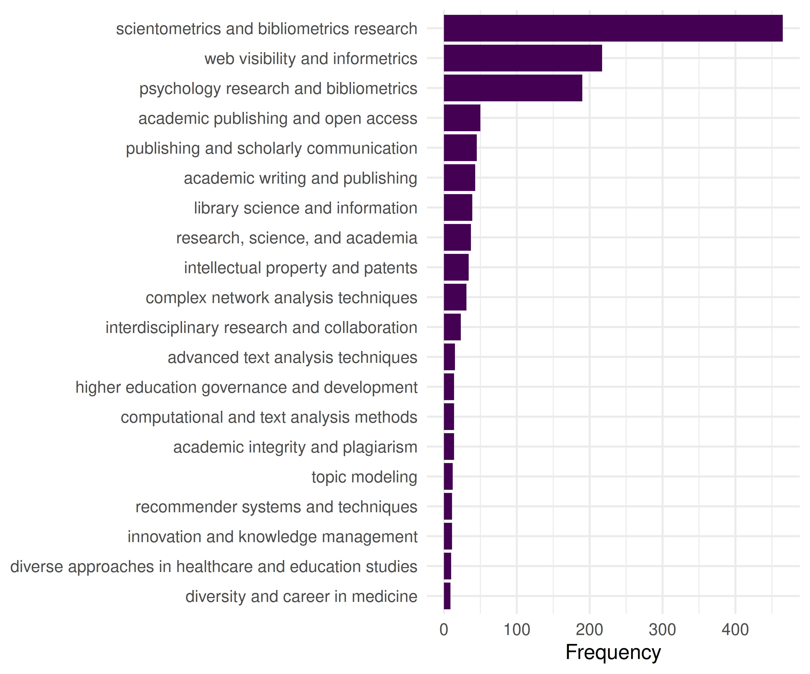
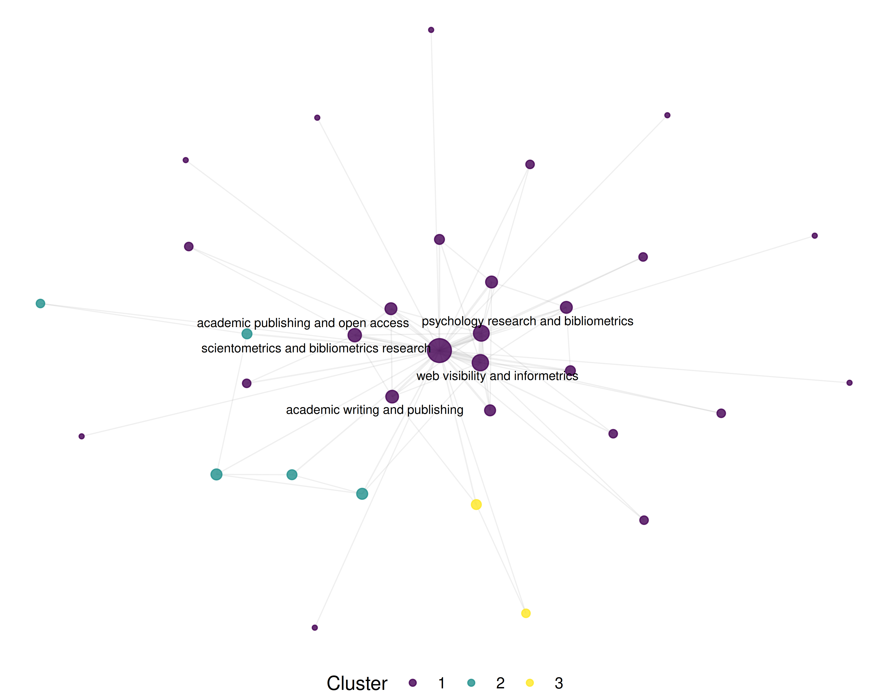

17 Co-word and Keyword Co-occurrence
R. Heller · Date: 2026-05-09 · Last changed: 2026-10-31
17.1 Learning objectives
After completing this chapter, you will be able to:
- Explain the principles of co-word analysis and its role in science mapping
- Extract and clean keywords from OpenAlex data (author keywords and concepts)
- Build a keyword co-occurrence matrix and convert it to a network
- Apply community detection to identify topical clusters
- Visualise keyword co-occurrence networks with interpretable layouts
17.3 Conceptual background
Co-word analysis maps the conceptual structure of a research field by examining which terms appear together in the same documents. Introduced by Callon et al. (1983), the method assumes that when two keywords repeatedly co-occur across publications, they are thematically related. The resulting co-occurrence network reveals the topical landscape of a field: clusters of densely connected keywords represent coherent research themes, while bridges between clusters indicate interdisciplinary connections.
The method works with several types of terms:
- Author keywords: Terms selected by the paper’s authors. These are intentional descriptors but suffer from inconsistency — authors may use different terms for the same concept (“machine learning” vs. “ML” vs. “statistical learning”).
- Indexed keywords: Terms assigned by database indexers (e.g., MeSH terms in PubMed). More consistent but only available in some databases.
- OpenAlex concepts: Algorithmically assigned topics at multiple levels of a hierarchical taxonomy. These provide broad coverage but may miss nuanced distinctions (Priem et al. 2022).
- Title/abstract words: Extracted via text mining. Comprehensive but noisy; requires extensive preprocessing.
Normalisation is important for co-word networks. Raw co-occurrence counts favour high-frequency terms. Common normalisations include the association strength (equivalent to pointwise mutual information) and the equivalence index (cosine of the co-occurrence vector). Waltman et al. (2010) demonstrated that association strength produces the most balanced network structures for bibliometric mapping.
Co-word analysis complements citation-based methods (16.3). Citation networks reveal intellectual influence; co-word networks reveal thematic content. Combining both provides a more complete picture of a field’s structure.
17.4 Worked example
17.4.1 Extracting keywords
We use OpenAlex-assigned topic labels as terms in a sample of scientometrics research. These are algorithmic labels, not author-supplied keywords. The flattened topic table also includes parent subfields, fields, and domains; retain only topic identifiers (T...) and count each term once per work.
works <- fetch_openalex(
entity = "works",
primary_location.source.id = "S148561398",
from_publication_date = "2019-01-01",
to_publication_date = "2023-12-31",
options = list(sample = 500, seed = 42)
)
keywords <- works |>
select(id, topics) |>
unnest(topics, names_sep = "_") |>
filter(str_detect(topics_id, "(^|/)T[0-9]+$")) |>
filter(topics_display_name != "") |>
select(work_id = id, keyword = topics_display_name) |>
mutate(keyword = str_to_lower(str_trim(keyword))) |>
filter(!is.na(keyword), nchar(keyword) >= 3) |>
distinct(work_id, keyword)
kw_counts <- keywords |>
count(keyword, sort = TRUE)
cat(glue("Total keyword occurrences: {nrow(keywords)}\n"))#> Total keyword occurrences: 1500#> Unique keywords: 136
kw_counts |>
head(20) |>
mutate(keyword = fct_reorder(keyword, n)) |>
ggplot(aes(x = n, y = keyword)) +
geom_col(fill = palette_sci(1)) +
labs(x = "Frequency", y = NULL) +
theme_sci()
Figure 17.1: Top 20 most frequent assigned topics used as terms in the Scientometrics sample.
17.4.2 Building the co-occurrence network
We create edges between keywords that appear in the same paper.
kw_frequent <- kw_counts |>
filter(n >= 5) |>
pull(keyword)
kw_filtered <- keywords |>
filter(keyword %in% kw_frequent)
coword_pairs <- kw_filtered |>
inner_join(kw_filtered, by = "work_id", suffix = c("_a", "_b"),
relationship = "many-to-many") |>
filter(keyword_a < keyword_b) |>
count(keyword_a, keyword_b, name = "cooccurrence")
coword_top <- coword_pairs |>
filter(cooccurrence >= 3)
g_kw <- graph_from_data_frame(
coword_top |> select(keyword_a, keyword_b, weight = cooccurrence),
directed = FALSE
) |>
simplify(edge.attr.comb = list(weight = "sum"))
cat(glue("Keyword network: {vcount(g_kw)} nodes, {ecount(g_kw)} edges\n"))#> Keyword network: 34 nodes, 66 edges17.4.3 Community detection for topical clusters
V(g_kw)$degree <- degree(g_kw)
V(g_kw)$strength <- strength(g_kw)
communities <- cluster_leiden(g_kw, resolution_parameter = 0.8,
objective_function = "modularity")
V(g_kw)$community <- as.factor(membership(communities))
cat(glue("Communities: {length(unique(membership(communities)))}\n"))#> Communities: 5#> Modularity: 0.051
community_summary <- tibble(
keyword = V(g_kw)$name,
community = V(g_kw)$community,
strength = V(g_kw)$strength
) |>
group_by(community) |>
slice_max(strength, n = 5) |>
summarise(top_keywords = paste(keyword, collapse = ", "),
n_keywords = n(), .groups = "drop")
community_summary |> gt()| community | top_keywords | n_keywords |
|---|---|---|
| 1 | scientometrics and bibliometrics research, web visibility and informetrics, psychology research and bibliometrics, academic publishing and open access, publishing and scholarly communication | 5 |
| 2 | recommender systems and techniques, information retrieval and search behavior | 2 |
| 3 | computational and text analysis methods, advanced text analysis techniques, topic modeling | 3 |
| 4 | efficiency analysis using dea, innovation policy and r&d | 2 |
| 5 | intellectual property and patents, intellectual property law, firm innovation and growth, innovation and knowledge management | 4 |
17.4.4 Visualisation
set.seed(42)
layout <- create_layout(as_tbl_graph(g_kw), layout = "fr")
ggraph(layout) +
geom_edge_link(aes(width = weight), alpha = 0.15, colour = "grey60") +
scale_edge_width_continuous(range = c(0.3, 2), guide = "none") +
geom_node_point(aes(size = degree, colour = community), alpha = 0.8) +
geom_node_text(aes(label = ifelse(degree > quantile(degree, 0.85),
name, NA_character_)),
repel = TRUE, size = 2.5, max.overlaps = 20, na.rm = TRUE) +
scale_size_continuous(range = c(1, 6), guide = "none") +
scale_colour_manual(values = palette_sci(
n_distinct(V(g_kw)$community)
)) +
labs(colour = "Cluster") +
theme_void(base_family = "sans", base_size = 11) +
theme(legend.position = "bottom")
Figure 17.2: Keyword co-occurrence network coloured by topical cluster.
17.5 Diagnostics and interpretation
- Keyword cleaning: Inconsistent terminology inflates the vocabulary and creates spurious nodes. Standardise spelling, merge synonyms (e.g., “h-index” and “hirsch index”), and remove generic terms (“research”, “analysis”) that co-occur with everything but convey no topical information.
- Frequency threshold: Including rare keywords produces large, sparse, unreadable networks. Start with keywords appearing in at least 5 papers and adjust based on corpus size.
- Community interpretability: Each community should correspond to a recognisable research theme. If communities are uninterpretable, the resolution parameter may need adjustment or keywords need further cleaning.
- Centrality interpretation: High-degree keywords are thematically central (used across many contexts). High-betweenness keywords bridge distinct topics and may represent interdisciplinary concepts.
17.7 Limitations and responsible use
- Vocabulary inconsistency. Author keywords are not controlled vocabulary. The same concept may appear under multiple terms, fragmenting what should be a single node. Merging synonyms requires domain expertise.
- Algorithmic concepts. OpenAlex concepts are assigned by machine learning and may contain errors — especially at fine-grained levels. Always validate topic assignments by reading sample papers (Priem et al. 2022).
- Static snapshots. A co-word network represents a time-averaged view. Emerging topics with few publications may be invisible. Consider building temporal slices to track field evolution.
- Not evaluative. Popular keywords indicate research activity, not research quality or societal impact. Do not equate topical centrality with importance (Hicks et al. 2015).
17.9 Common pitfalls
- Not cleaning keywords. Punctuation variants (“co-authorship” vs. “coauthorship”), case differences, and trailing whitespace create duplicate nodes. Clean before building the network.
- Including stop-keywords. Generic terms like “research”, “study”, “analysis” co-occur with everything and dominate the network without conveying topical information. Remove them.
- Comparing co-occurrence counts across corpora of different sizes. Larger corpora produce higher co-occurrence counts mechanically. Normalise or use relative measures.
- Over-reading small clusters. A cluster with two or three keywords may reflect a single paper, not a research theme. Report cluster size alongside content.
17.10 Exercises
Author keywords vs. concepts. Build co-occurrence networks from both author keywords (if available) and OpenAlex concepts for the same corpus. Compare the resulting topical clusters.
Temporal evolution. Split the corpus into yearly slices. For each year, build a co-word network and identify the top 5 keywords by degree. Which keywords are consistently central, and which emerge over time?
Strategic diagram. Compute density (internal cohesion) and centrality (external connections) for each keyword cluster. Plot them on a strategic diagram (density vs. centrality quadrants). Which clusters are core themes and which are peripheral?
Normalisation comparison. Build two networks from the same data: one with raw co-occurrence counts and one with association strength normalisation. How do the most central keywords differ?
17.11 Solutions
Solutions are provided in E.
17.12 Further reading
- Callon et al. (1983) — The foundational paper on co-word analysis for mapping science.
- Waltman et al. (2010) — Unified framework for bibliometric network construction, including keyword networks.
-
Aria and Cuccurullo (2017) —
bibliometrixincludes co-word analysis via thebiblioNetwork()function. - Priem et al. (2022) — OpenAlex concepts and topic classification.
17.13 Session info
#> R version 4.6.1 (2026-06-24)
#> Platform: x86_64-pc-linux-gnu
#> Running under: Ubuntu 24.04.5 LTS
#>
#> Matrix products: default
#> BLAS: /usr/lib/x86_64-linux-gnu/openblas-pthread/libblas.so.3
#> LAPACK: /usr/lib/x86_64-linux-gnu/openblas-pthread/libopenblasp-r0.3.26.so; LAPACK version 3.12.0
#>
#> locale:
#> [1] LC_CTYPE=C.UTF-8 LC_NUMERIC=C LC_TIME=C.UTF-8
#> [4] LC_COLLATE=C.UTF-8 LC_MONETARY=C.UTF-8 LC_MESSAGES=C.UTF-8
#> [7] LC_PAPER=C.UTF-8 LC_NAME=C LC_ADDRESS=C
#> [10] LC_TELEPHONE=C LC_MEASUREMENT=C.UTF-8 LC_IDENTIFICATION=C
#>
#> time zone: UTC
#> tzcode source: system (glibc)
#>
#> attached base packages:
#> [1] stats graphics grDevices utils datasets methods base
#>
#> other attached packages:
#> [1] ggraph_2.2.2 tidygraph_1.3.1 igraph_2.3.4 quanteda_4.5.1
#> [5] pdftools_3.9.1 arrow_26.0.0 bibliometrix_5.5.0 RefManageR_1.4.0
#> [9] bib2df_1.1.2.0 rcrossref_1.2.1 gt_1.4.0 tidytext_0.4.3
#> [13] glue_1.8.1 openalexR_3.1.2 lubridate_1.9.5 forcats_1.0.1
#> [17] stringr_1.6.0 dplyr_1.2.1 purrr_1.2.2 readr_2.2.0
#> [21] tidyr_1.3.2 tibble_3.3.1 ggplot2_4.0.3 tidyverse_2.0.0
#>
#> loaded via a namespace (and not attached):
#> [1] bibtex_0.5.3 RColorBrewer_1.1-3 rstudioapi_0.19.0
#> [4] jsonlite_2.0.0 magrittr_2.0.5 farver_2.1.2
#> [7] rmarkdown_2.32 fs_2.1.0 vctrs_0.7.3
#> [10] memoise_2.0.1 askpass_1.2.1 base64enc_0.1-6
#> [13] htmltools_0.5.9 contentanalysis_1.1.1 curl_8.1.0
#> [16] janeaustenr_1.0.0 cellranger_1.1.0 sass_0.4.10
#> [19] bslib_0.12.0 htmlwidgets_1.6.4 tokenizers_0.3.0
#> [22] plyr_1.8.9 httr2_1.3.0 plotly_4.12.1
#> [25] cachem_1.1.0 dimensionsR_0.0.3 mime_0.13
#> [28] lifecycle_1.0.5 pkgconfig_2.0.3 Matrix_1.7-5
#> [31] R6_2.6.1 fastmap_1.2.0 shiny_1.14.0
#> [34] digest_0.6.39 shinycssloaders_1.1.0 rprojroot_2.1.1
#> [37] SnowballC_0.7.1 labeling_0.4.3 urltools_1.7.3.1
#> [40] timechange_0.4.0 polyclip_1.10-7 httr_1.4.9
#> [43] compiler_4.6.1 here_1.0.2 bit64_4.8.6
#> [46] withr_3.0.3 S7_0.2.2 viridis_0.6.5
#> [49] ggforce_0.5.0 MASS_7.3-65 bibliometrixData_0.3.0
#> [52] tools_4.6.1 otel_0.2.0 stopwords_2.3
#> [55] zip_3.0.2 httpuv_1.6.17 rentrez_1.2.4
#> [58] promises_1.5.0 grid_4.6.1 stringdist_0.9.17
#> [61] generics_0.1.4 gtable_0.3.6 tzdb_0.5.0
#> [64] rscopus_0.9.0 ca_0.72 data.table_1.18.6.1
#> [67] hms_1.1.4 xml2_1.6.0 utf8_1.2.6
#> [70] ggrepel_0.9.8 pillar_1.11.1 later_1.4.8
#> [73] tweenr_2.0.3 lattice_0.22-9 bit_4.6.0
#> [76] tidyselect_1.2.1 miniUI_0.1.2 downlit_0.4.5
#> [79] knitr_1.52 gridExtra_2.3.1 bookdown_0.48
#> [82] crul_1.6.0 xfun_0.62 graphlayouts_1.2.5
#> [85] DT_0.34.0 humaniformat_0.6.0 visNetwork_2.1.4
#> [88] stringi_1.8.9 qpdf_1.4.1 yaml_2.3.12
#> [91] evaluate_1.0.5 httpcode_0.3.0 cli_3.6.6
#> [94] xtable_1.8-8 jquerylib_0.1.4 Rcpp_1.1.2
#> [97] readxl_1.6.0 triebeard_0.4.1 XML_3.99-0.25
#> [100] parallel_4.6.1 assertthat_0.2.1 pubmedR_1.0.2
#> [103] viridisLite_0.4.3 scales_1.4.0 openxlsx_4.2.9
#> [106] rlang_1.3.0 fastmatch_1.1-8